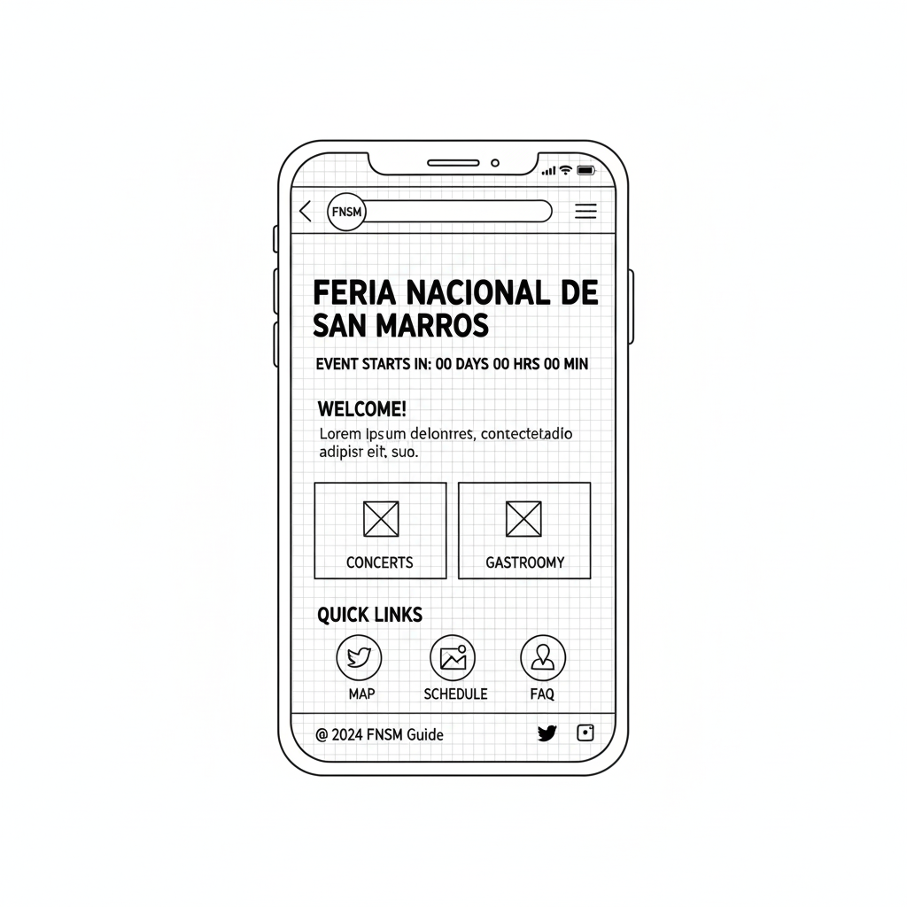
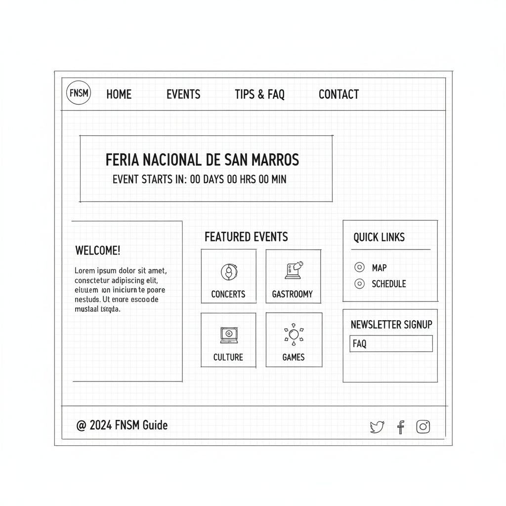

Site Name
FNSM Digital Guide
I chose this name because it's clear, descriptive, and uses the well-known acronym for the Feria Nacional de San Marcos (FNSM). It immediately tells users that the site is an online guide for the event.
Site Purpose
The FNSM Digital Guide will be a comprehensive, easy-to-use informational hub for visitors to the Feria Nacional de San Marcos. The site will provide a dynamic event schedule, highlight key attractions, and offer practical tips to enhance the visitor experience. Its goal is to help attendees plan their visit efficiently and discover all the fair has to offer.
Scenarios
- What are the must-see attractions for families with young children?
- How can I find the schedule for the free concerts at the Foro de las Estrellas?
Color Schema
The color palette is inspired by the vibrant and festive atmosphere of the fair.
Typography
The chosen fonts provide a balance of modern style and readability.
Headings: Montserrat (Bold)
Montserrat is a modern, geometric sans-serif that is strong and highly legible, making it perfect for titles and headings that need to grab attention.
Body Text: Lato (Regular & Bold)
Lato is a clean, friendly sans-serif font designed for readability in body text. It feels warm and is easy to read on screens of all sizes. Bolded Lato will be used for emphasis.
Wireframes
Wireframes for the home page layout in both mobile and desktop views.
Mobile View
- Header (Logo + Nav Toggle)
- Hero Image / Countdown
- Welcome Text
- Featured Events (Cards)
- Quick Links Section
- Footer
Desktop View
- Header (Logo + Full Nav)
- Hero Image / Countdown
- Welcome Text & Image (2-col)
- Featured Events (Grid)
- Quick Links Section
- Footer